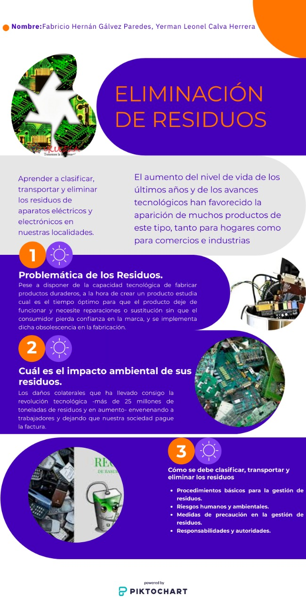

<!DOCTYPE html>
<html lang="en">
<head>
    <meta charset="UTF-8">
    <meta name="viewport" content="width=device-width, initial-scale=1.0">
    <title>Document</title>
</head>
<body>
    
</body>
</html>

<meta charset="UTF-8">
<meta name="viewport" content="width=device-width, initial-scale=1.0">
<meta http-equiv="X-UA-Compatible" content="ie=edge">
<title>Qué son los Aparatos Eléctricos y Electrónicos y cuál es el impacto ambiental de sus residuos.</title>
</head>
<body>
<h1>QUE SON LOS APARATOS ELECTRICOS Y ELECTRONICOS Y CUAL ES EL IMPACTO AMBIENTAL DE SUS RESIDUOS</h1>
<h2>INSTITUTO TECNOLOFICO SUPERIOR JUAN MONTALVO LOJA </h2>
<p>En primer lugar, debemos definir a los aparatos eléctricos y electrónicos. Según la ONG Ecotic son “aquellos que para funcionar necesitan una corriente eléctrica o un campo electromagnético, con una tensión nominal de funcionamiento inferior a 1.000 V en corriente alterna y 1.500 V en corriente continua”. También, los necesarios para “generar, transmitir y medir las corrientes y campos”.
    La historia de los Aparatos Eléctricos y Electrónicos intenta explicar de una manera creativa los daños colaterales que ha llevado consigo la revolución tecnológica -más de 25 millones de toneladas de residuos y en aumento- envenenando a trabajadores y dejando que nuestra sociedad pague la factura. <p></p>
      <tr>
        <td></td>
        <td></td>
    </tr>
    
</table>
<p>AUTOR YERMAN CALVA, HERNAN GALVEZ</p>
</body>
</html>